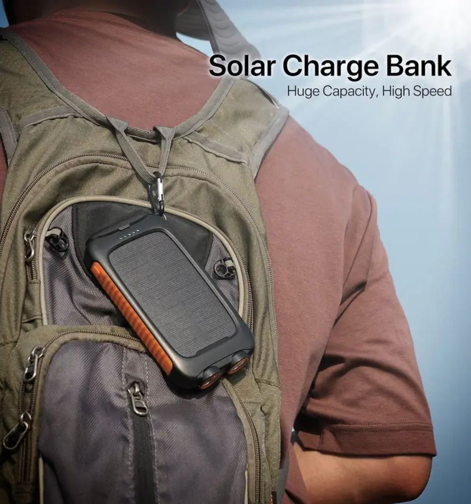

Galería del producto



Energía en cualquier lugar. Resistente. Confiable. Listo para ti.
Comprar ahoraCarga tus dispositivos varias veces sin preocuparte por quedarte sin batería.
Recarga tu power bank con energía solar, ideal para exteriores.
Impermeable, a prueba de polvo y golpes: hecho para la aventura.
Ilumina tu camino en campamentos o emergencias.
"Me salvó en un viaje de camping. Pude cargar mi celular y mi linterna toda la semana."
- Andrea, México"Diseño resistente y práctico. Lo llevo en mi mochila todos los días."
- Carlos, España"Excelente producto, lo usé en la playa y funcionó perfecto con la energía solar."
- Sofía, ChileCon cargador USB tarda entre 4 y 5 horas. Con energía solar depende de la exposición al sol.
Sí, tiene certificación de resistencia al agua y polvo (IPX6).
Sí, tiene puertos USB duales para cargar dos dispositivos simultáneamente.
No te quedes sin energía. Llévate el TRY-O Solar Power Bank hoy.
Comprar con PayPal